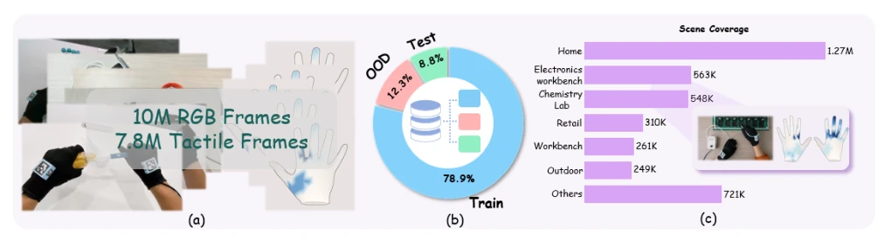
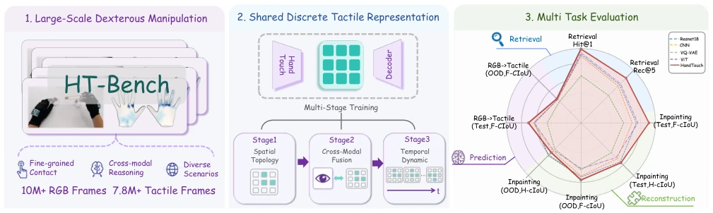
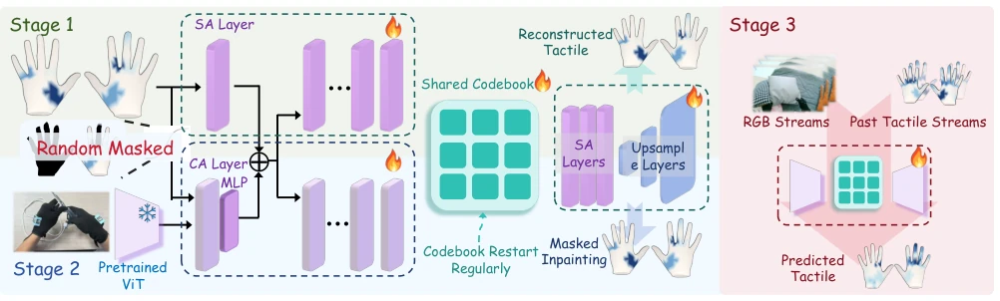
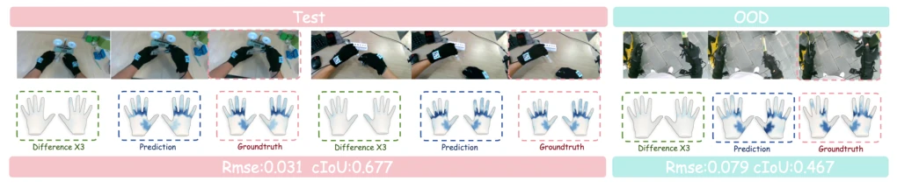

This paper attempts to address the pain point of the lack of a unified benchmark for tactile representation learning, proposing HT-Bench and the HandTouch model. Highlights include large data volume (10M RGB + 7.8M tactile frames), comprehensive evaluation dimensions (retrieval, completion, synthesis, prediction), and OOD testing, which is superior to many small datasets running only single tasks. HandTouch's three-stage progressive training approach is quite clear, and VQ encoding combined with cross-modal masking indeed improves performance. However, a critique is that the title is quite grand, but actually it is still limited to the specific configuration of 'whole-hand tactile + egocentric visual', not covering fingertip sensors or force sensing, still far from true 'generalization'. Moreover, experiments only stay at the representation level, without real-robot validation of dexterous manipulation effects, somewhat like 'armchair theorizing'. However, for tactile foundation model research, this is indeed a good stepping stone, at least the data is open-sourced, allowing everyone to continue competing.
研究动机Motivation
触觉感知对灵巧操作至关重要，能捕捉视觉无法估计的物理交互（Yang et al., 2024a; Luo et al., 2026）。但触觉表征学习受限于传感器设计和机器人形态的异构性（Chen et al., 2026a; Cao et al., 2026）。现有基准如 Sparsh (Higuera et al., 2024)、AnyTouch (Feng et al., 2025, 2026) 和 OpenTouch (Song et al., 2025) 虽提供了资源，但大多绑定特定传感器或任务，难以评估跨场景泛化能力。TouchAnything (Zhou et al., 2026) 虽有 OOD 但仅单任务。现有方法学习到的特征往往与特定传感器配置耦合（Liu et al., 2024; Zorin et al., 2026），缺乏可迁移的通用表征。因此，作者提出以自视视觉配对全手触觉为可扩展方向，建立 HT-Bench 来评估触觉编码器是否编码了接触几何、对齐视觉信息并泛化到未见任务。
Tactile perception is crucial for dexterous manipulation, capable of capturing physical interactions that vision cannot estimate (Yang et al., 2024a; Luo et al., 2026). However, tactile representation learning is limited by the heterogeneity of sensor design and robot morphology (Chen et al., 2026a; Cao et al., 2026). Existing benchmarks such as Sparsh (Higuera et al., 2024), AnyTouch (Feng et al., 2025, 2026), and OpenTouch (Song et al., 2025) provide resources, but most are bound to specific sensors or tasks, making it difficult to evaluate cross-scenario generalization ability. TouchAnything (Zhou et al., 2026) has OOD but only single task. Features learned by existing methods are often coupled with specific sensor configurations (Liu et al., 2024; Zorin et al., 2026), lacking transferable general representations. Therefore, the authors propose egocentric visual paired with whole-hand tactile as a scalable direction, establishing HT-Bench to evaluate whether tactile encoders encode contact geometry, align visual information, and generalize to unseen tasks.

Figure 2: Statistics and coverage of HT-Bench. (a) HT-Bench contains large-scale paired egocentric vision and full-hand tactile data, including 10M RGB frames and 7.8M tactile frames collected during dexterous manipulation. (b) The dataset is divided into training, test, and task-level out-of-distribution (OOD) splits to evaluate both in-distribution performance and generalization to unseen interaction tasks. (c) HT-Bench covers diverse environments and scene categories, including home, electronics workbench, chemistry lab, retail, workbench, outdoor, and other scenarios, providing broad coverage for evaluating tactile representation learning.
HandTouch adopts a three-stage progressive training framework. Stage 1 learns spatial topology through vector quantized tactile reconstruction, projecting continuous tactile observations into discrete token space, using a shared codebook and introducing a restart mechanism to prevent collapse. Stage 2 introduces cross-modal masked tactile completion, utilizing frozen ViT to extract visual features, injecting into tactile decoder via cross-attention, adopting curriculum learning strategy to gradually increase full mask ratio, strengthening visual-guided tactile reasoning. Stage 3 performs multimodal tactile frame prediction, combining recent visual observations and past tactile trajectories to predict future tactile distribution, modeling contact dynamics. The overall process is shown in Figure 3, modules of each stage are jointly optimized, ensuring representations possess structural discriminability, visual grounding, and temporal perception capabilities. Specifically, Stage 1 uses convolutional projection layers to patch tactile maps, after ViT encoding mapped to 2048-sized shared codebook via factorized vector quantizer, decoder reconstructs input to learn spatial contact topology, and adopts exponential moving average to track codebook usage frequency to prevent collapse. Stage 2 extends to cross-modal alignment, designing region random mask and full mask two strategies, dynamically adjusting full mask probability through curriculum learning, utilizing frozen ViT visual features as Key/Value, tactile Tokens as Query for cross-attention fusion, solving geometric ambiguity. Stage 3 focuses on temporal dynamics, inputting recent visual and past tactile trajectories, predicting current tactile distribution, requiring model to integrate context and history to capture contact evolution. This design directly matches HT-Bench evaluation dimensions, ensuring encoder possesses discriminability in structure, visual, and temporal aspects.

Figure 1: Overview of HT-Bench. 1. HT-Bench pairs egocentric vision with full-hand tactile data to provide a scalable bench- mark for dexterous tactile representation learning. It contains 10M RGB frames and 7.8M tactile frames collected from diverse manipulation tasks. 2. HandTouch learns a shared discrete tactile representation through progressive spatial, cross-modal, and temporal training, and 3. is evaluated on fine-grained tactile similarity retrieval, masked tactile inpainting, vision-to-tactile syn- thesis, and multimodal tactile frame prediction under task-level out-of-distribution splits.

Figure 3: Training pipeline of HandTouch. Stage 1: Learning spatial topologies of tactile graphics via unimodal self-attention reconstruction and vector quantization with a shared codebook. Stage 2: Reconstructing highly corrupted tactile images under a dynamic regional/complete masking scheme, guided by visual priors injected through cross-attention. Stage 3: Forecasting the current tactile distribution tT based on sequential visual context vT −2:T and past tactile histories tT −2:T −1. Modules with flame icons are actively trained in each phase.
Experiments are conducted on HT-Bench, containing 10M RGB and 7.8M tactile frames, divided into train, test, and task-level OOD sets, covering home, laboratory, and other scenarios. Comparison baselines include CNN, ResNet-18, VQ-VAE, and ViT encoders, all pre-trained on the same training set. Evaluation tasks cover fine-grained tactile retrieval, masked completion, vision-to-tactile synthesis, and frame prediction. Results show HandTouch leads comprehensively, retrieval Recall@5 improved from 74.65% to 85.23%, completion RMSE dropped to 0.010, synthesis cIoU improved to 0.705. But reconstruction in local severely damaged areas of unseen tasks still faces challenges (ResNet-18 slightly better on the OOD hole metric). Figure 4 shows qualitative results of frame prediction. Ablation studies are insufficient, future work needs to verify the impact of VQ codebook and mask curriculum.

Figure 4: Qualitative results of multimodal tactile frame prediction. HandTouch predicts tactile distributions that closely match the ground truth under both in-distribution and OOD settings. Prediction errors are magnified by a factor of 3 for better visualization. These results illustrate the temporal contact modeling capability of HandTouch.